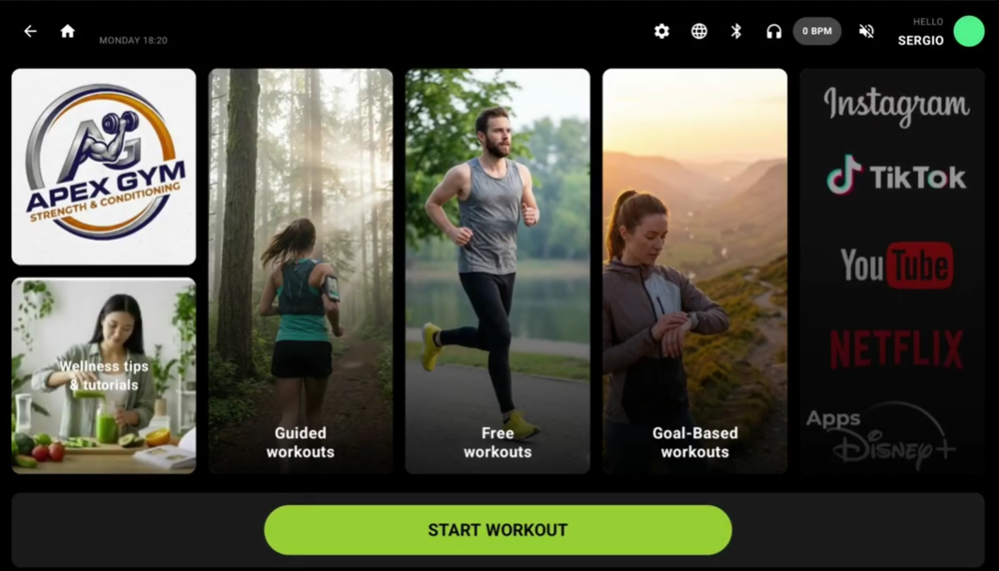
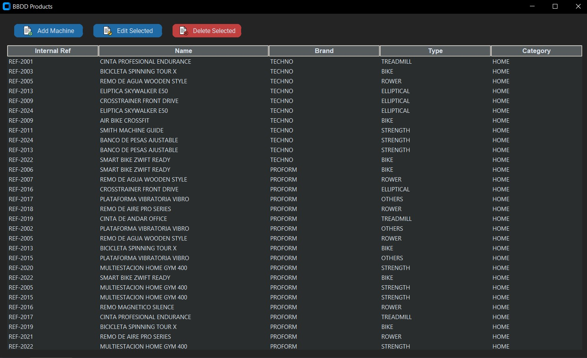
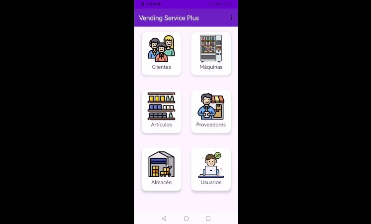

Especializado en el desarrollo de aplicaciones multiplataforma con Kotlin, Android, Python y React.
Auxiliar Quality Assurance
Desarrollador Android
I.E.S Espeñetas — Desarrollo de Aplicaciones Multiplataforma (DAM)
2022 - 2024
Launcher Android especializado con conexión Bluetooth FTMS.

Gestión CRUD de fichas técnicas con MongoDB Atlas y Cloudinary.

Sistema de gestión y automatización de procesos para máquinas expendedoras con Java y Android.

Desarrollador de software con experiencia en la creación de aplicaciones nativas mediante Kotlin y Java, así como en el desarrollo de herramientas de backend con Python. Me enfoco en escribir código limpio y eficiente.
Actualmente, estoy expandiendo mis capacidades hacia el desarrollo moderno con React, con el objetivo de consolidar un perfil Full Stack y abordar proyectos de mayor complejidad técnica.
Demostración en tiempo real de la conexión BLE.
Aplicación de escritorio desarrollada en Python para centralizar la gestión de maquinaria. Implementa un sistema MongoDB para mayor flexibilidad en los datos técnicos.
Desarrollo centrado en la optimización de procesos de venta automática. Incluye gestión de stock en tiempo real y una interfaz adaptada para terminales industriales.